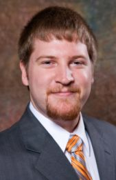

My name is Mason Nixon and I am currently working in the space industry in Huntsville, AL. In May 2013, I graduated from the Georgia Institute of Technology with my master's degree in Electrical Engineering with a focus in control systems with emphasis in robotics. My secondary area of interest is in electromagnetics, particularly related to satellite communications and radar. My minor field of study was Computer Science. I received my undergraduate
summa cum laude (with most high honors) from Auburn University in Electrical and a second bachelor's in Wireless Engineering on May 9th, 2011, ranked first in my class in Electrical Engineering and Wireless Engineering.
I received an award for Outstanding Research in Alternative Fuels in my sophomore year and founded an Engineering Club dedicated to fuel alternatives research. During my time at Auburn University, I joined the Student Projects and Research Committee and went on to lead them at two IEEE Southeastern Conference's robotics competitions. My team and I won the Engineering Wifi Antenna Design Team Competition for the best performing Wifi antenna design. I also won a Radar Tracking Algorithm Design Team competition.
In addition to other merit based scholarships, I received the national SMART Scholarship for Service in 2009 (out of 1500 applicants) to fund my undergraduate degree and then again in 2011 (out of 2700 applicants) for my graduate studies. During my undergraduate career, I was an officer in IEEE, Tau Beta Pi, and Eta Kappa Nu. At Georgia Tech, my focus was in systems and controls where I developed a system to aid in physical therapy of children with cerebral palsy. In my spare time, I enjoy programming, water
skiing, playing solo acoustic guitar, and spending time with my daughter and wife.
Some current projects I am working on and things I have done in the past can be found on the projects page. More information about me can be found here on my about me page. To contact me for more information, send me an email.